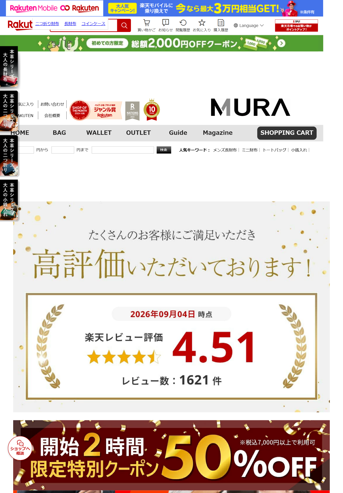
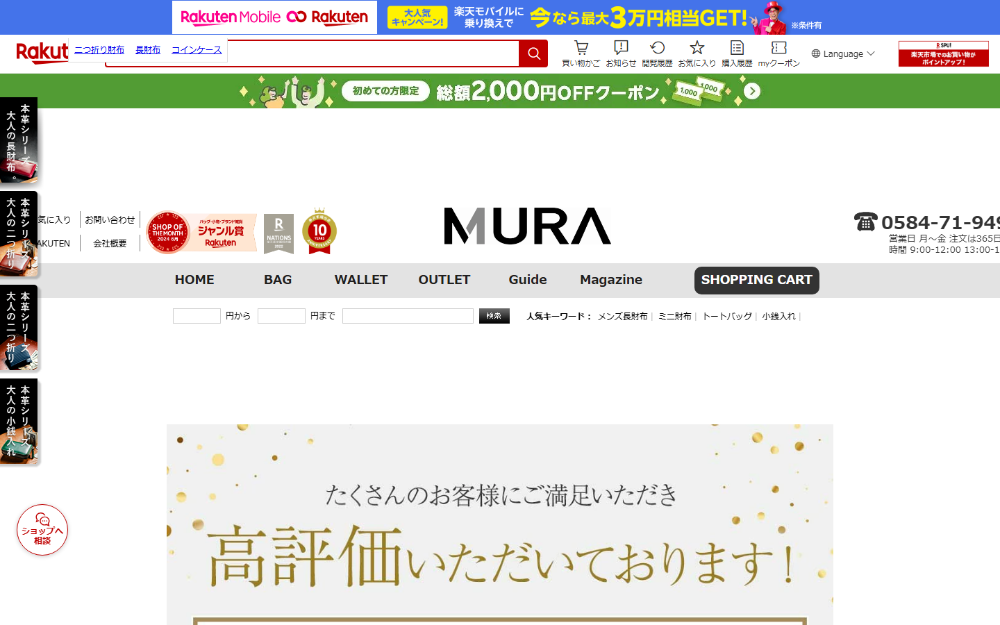

2026-09-04 時点。1ページ。
https://item.rakuten.co.jp/kinoco/wallet-04/


撮っているのは「開いた瞬間に見える範囲」です。 縦に全部つなげた画像にしていません。見たいのは、来た人が最初に何を見るかだからです。
幅の比はそのままにしてあります。 3つを同じ大きさに揃えると、スマホでどれだけ狭いかが分からなくなります。
画像をクリックすると原寸で開きます。